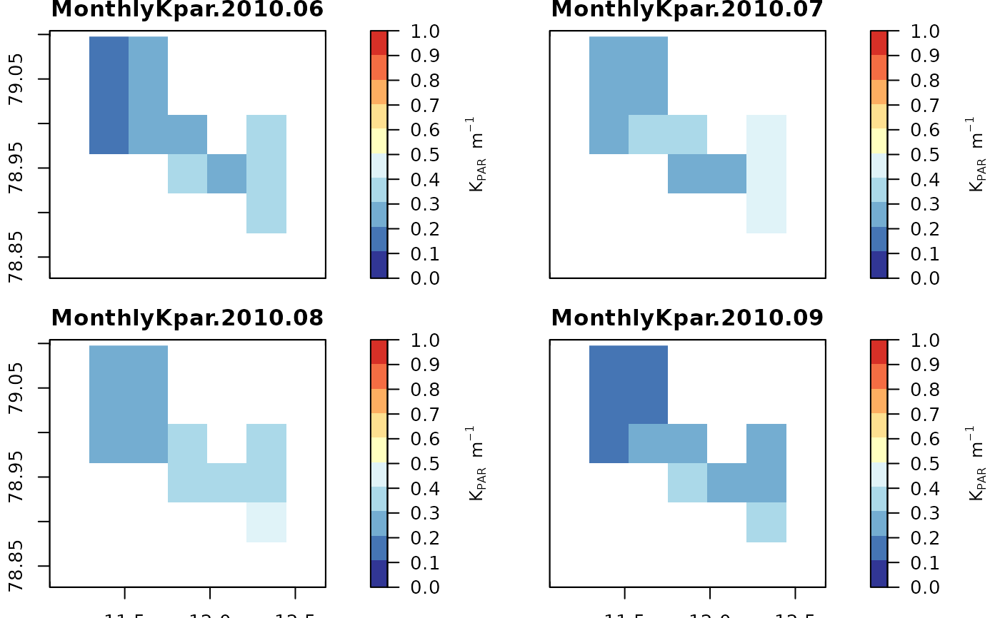

Extract monthly K_PAR data from a NetCDF file downloaded by FjordLight.
flget_KPARMonthlyTS.RdThis functions will extract the monthly K_PAR data stored within a K_PAR
NetCDF file downloaded via fl_DownloadFjord. Note that these data are
very large. If one would prefer to work with the smaller annual or monthly climatology
values, instead use flget_climatology. There are options for how the user
would like to subset the data, which data format the data should be extracted to,
and if the user would like to plot the data in the process.
Arguments
- fjord
Expects the object loaded via
fl_LoadFjord. NB: when loading the data one must set the argumentfl_LoadFjord(..., TS = TRUE). See examples below.- month
The monthly values to extract. Accepts one or many integer values from 3 to 10. If no values are provided, the default value of
NULLwill be passed to the function, telling it to load all available months of data (i.e. 3:10). This is used in combination withyearto determine which monthly data to extract.- year
The years of data to extract. Currently accepts one or many integer values from 2003 to 2022. If no values are provided, the default value of
NULLwill be passed to the function, telling it to load all available years of data (i.e. currently 2003:2022). This is used in combination withmonthto determine which monthly data to extract.- mode
Determines the format of the data loaded into the R environment. The default
"raster"will load the data as a raster format. The other option"df"will load the data as a data.frame with three columns.- PLOT
Boolean argument (default =
FALSE) that tells the function if the user would like the loaded data to be plotted or not.
Value
Depending on which arguments the user chooses, this function will return the
chosen monthly K_PAR data as a RasterStack (mode = "raster")
or data.frame (mode = "df"). The data.frame will contain the following columns:
- longitude
degree decimals
- latitude
degree decimals
- PARbottom
mol photons m-2 d-1
Examples
# Load ALL data
fjord_code <- "test"
fjorddata <- fl_LoadFjord(fjord_code,
dirdata = system.file("extdata", package = "FjordLight"),
TS = TRUE, layer = "K_PAR")
# Load a small subset as a data.frame
mts_single <- flget_KPARMonthlyTS(fjorddata, month = 6, year = 2016, mode = "df", PLOT = FALSE)
# Years 2003 to 2004 - months July to August
# NB: This may be too large for smaller laptops
# \donttest{
mts_many <- flget_KPARMonthlyTS(fjorddata, month = 7:8, year = 2003:2004, PLOT = FALSE)
# May also plot the data
mts_plot <- flget_KPARMonthlyTS(fjorddata, month = 6:9, year = 2010, PLOT = TRUE)

# }
# For more examples: https://face-it-project.github.io/FjordLight/articles/fl_example.html